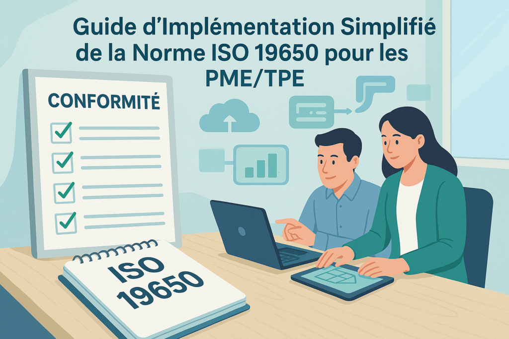

Inside a Data Center
A visual guide to understanding, designing, and speaking the language of data centers. Free 9-page preview, no strings attached.
Get the free preview
La norme internationale ISO 19650 sur la gestion de l’information et le BIM… rien que le nom peut sembler intimidant, surtout pour une Petite ou Moyenne Entreprise (PME) ou une Très Petite Entreprise (TPE) du secteur de la construction. On imagine souvent une usine à gaz complexe, réservée aux grands groupes avec des armées de BIM Managers. Stop aux idées reçues ! Si la norme est effectivement complète, ses principes fondamentaux sont pleins de bon sens et peuvent apporter d’énormes bénéfices aux structures de toutes tailles. Mieux encore : il est tout à fait possible de démarrer une implémentation simplifiée et progressive, adaptée à votre réalité de PME/TPE. Cet article est votre guide pour démystifier l’ISO 19650 et vous lancer, étape par étape, sans vous noyer.
Pourquoi s’Intéresser à l’ISO 19650 quand on est une PME/TPE ?
Vous vous dites peut-être : “Pourquoi ajouter cette complexité ? Je n’ai pas le temps ni les ressources !”. Détrompez-vous. Au-delà d’une éventuelle exigence sur certains marchés (publics notamment), adopter les principes de l’ISO 19650, même de manière allégée, présente des avantages très concrets pour VOUS :
- Gagner en Efficacité (et donc en Rentabilité) : Combien de temps perdez-vous à chercher la dernière version d’un plan ? À corriger des erreurs dues à une mauvaise information ? Structurer l’information réduit ces pertes de temps coûteuses.
- Mieux Collaborer : Même si vos partenaires n’appliquent pas la norme, définir VOS règles du jeu (comment vous nommez vos fichiers, où vous les stockez) simplifie les échanges et réduit les malentendus.
- Améliorer la Relation Client : Fournir des informations claires, tracées et fiables est un gage de sérieux et de professionnalisme qui rassure vos clients.
- Valoriser Votre Entreprise : Afficher une maîtrise des processus BIM modernes peut faire la différence face à la concurrence, même pour une petite structure.
- Préparer l’Avenir : Que ce soit via les marchés publics ou privés, la demande pour une gestion de l’information structurée va continuer de croître. Mieux vaut anticiper.
Les Grands Principes de l’ISO 19650 (Version Simplifiée pour PME)
Oublions le jargon complexe pour l’instant et concentrons-nous sur l’esprit de la norme :
- Savoir ce qu’on Veut : Avant de produire un plan ou un modèle, définissez clairement *pourquoi* il est nécessaire et *quelles informations clés* il doit contenir. C’est la base des “Besoins d’Échange d’Informations” (BEI/EIR). Pour une PME, ça peut être une simple liste discutée en début de projet.
- Un Seul Endroit pour l’Info : Fini les fichiers éparpillés sur 10 clés USB ! Mettez en place un **Environnement de Données Commun (CDE)**, un espace centralisé (serveur, cloud…) où tout le monde accède à la bonne version de l’information. Pas besoin de la solution la plus chère du marché pour démarrer (voir notre comparatif des plateformes CDE
- Donner un Statut à l’Info : Une information n’a pas la même valeur si elle est “en cours de brouillon” ou “validée pour construction”. L’ISO 19650 propose des statuts clairs (WIP, Partagé, Publié…). Adopter même 3 ou 4 statuts simples change la donne.
- Parler le Même Langage (Nommage) : Nommer les fichiers et les modèles de façon cohérente est essentiel pour s’y retrouver. Définissez une règle simple et logique pour votre entreprise.
- Savoir Qui Fait Quoi : Même dans une petite équipe où les gens sont polyvalents, il est utile d’identifier qui est responsable de la demande d’info (le client), qui pilote le projet et la gestion de l’info, et qui produit les livrables. (Voir notre article sur les rôles et responsabilités BIM).
Par Où Commencer Concrètement ? 5 Étapes Clés pour une PME/TPE
Prêt à passer à l’action ? Voici une feuille de route réaliste :
Étape 1 : Sensibiliser & Nommer un “Pilote BIM/ISO” Interne
- Communiquez : Expliquez à votre équipe (même si elle est petite) pourquoi cette démarche est importante et quels bénéfices vous en attendez.
- Identifiez un Référent : Désignez une personne volontaire et organisée qui sera le “point de contact” pour les questions BIM et la mise en place de ces bonnes pratiques. Pas besoin d’un expert certifié au début !
Étape 2 : Structurer Votre “Mini-CDE”
- Choisissez Votre Outil :
- Option 1 (Basic) : Une structure de dossiers claire et respectée sur votre serveur interne ou un cloud partagé (Dropbox, Google Drive, OneDrive…).
- Option 2 (Mieux) : Utiliser une vraie solution CDE, même simple ou gratuite pour commencer (ex: Trimble Connect Free, ACC Docs en version limitée…).
- Créez l’Arborescence de Base : Inspirez-vous de l’ISO 19650 :
01_WIP(Work In Progress) : Le “bac à sable” de chaque intervenant.02_SHARED(Partagé) : Pour la coordination, les vérifications, les approbations.03_PUBLISHED(Publié) : Les documents validés et prêts à être utilisés/diffusés.
- Définissez les Accès : Qui peut lire/écrire dans quel dossier ? Restez simple au début.
Étape 3 : Établir VOTRE Convention de Nommage Simple
- Inspirez-vous, n’imitez pas aveuglément : La structure type ISO [Projet]-[Origine]-[Zone]-[Niveau]-[Type]-[Rôle]-[Numéro] est souvent trop lourde pour une PME.
- Adaptez : Choisissez 4 ou 5 champs MAXIMUM qui sont VRAIMENT utiles pour vous retrouver. Exemple :
[CodeProjet]_[TypeDoc]_[ZoneNiveau]_[Discipline]_[Indice].extension(ex:PROJ123_PLN_RDC_ARC_A.pdf). - Documentez et Diffusez : Écrivez la règle choisie quelque part (une page suffit !) et assurez-vous que tout le monde l’a comprise et l’applique. La cohérence est la clé.
Étape 4 : Utiliser les Statuts d’Information de Base
- Commencez Simple : Adoptez un minimum de statuts clairs. Par exemple :
- S0: En Cours (dans WIP)
- S1: Pour Info/Coordination (dans Shared)
- S2: Pour Approbation (dans Shared)
- P01: Approuvé/Publié (dans Published)
- Définissez le Processus : Qui valide un document pour qu’il passe de S0 à S1, puis à S2 et enfin à P01 ? Une simple check-list ou une validation par e-mail peut suffire au début. L’important est la traçabilité.
Étape 5 : Créer un Modèle de “Mini-Convention BIM” Interne
- Formalisez Vos Règles : Préparez un document type (votre “Convention BIM Light” ou “Plan d’Exécution BIM Interne”) d’une ou deux pages maximum pour démarrer.
- Contenu Essentiel :
- Objectifs BIM simples du projet (ex: produire des plans cohérents, éviter les erreurs de coordination…).
- Nom du référent BIM projet.
- Lien ou description du CDE utilisé et règles d’accès.
- VOTRE convention de nommage choisie.
- Liste des statuts utilisés et leur signification/processus de validation.
- Principaux livrables attendus.
- Utilisation : Appliquez-la d’abord sur vos projets internes. Une fois à l’aise, proposez-la comme base de discussion avec vos partenaires sur de nouveaux projets.
Les Documents Essentiels (Version PME/TPE)
Ne vous laissez pas effrayer par les acronymes de l’ISO 19650. Pour une PME, l’essentiel peut se résumer à :
- Le Besoin d’Info (EIR simplifié) : Une liste claire (e-mail, tableau…) de ce que le client attend ou de ce dont vous avez besoin pour travailler (quels plans, quels modèles, quelles données, pour quand ?).
- La Convention BIM (BEP simplifié) : C’est **VOTRE** document clé (cf. Étape 5 ci-dessus). Il décrit les règles du jeu que vous proposez ou que vous acceptez pour le projet.
- Le Planning des Livrables (MIDP simplifié) : Un simple tableau (type Excel) qui liste les principaux documents/modèles à produire, qui en est responsable, et les dates cibles. Très utile pour le suivi.
L’Approche Progressive : Ne Pas Vouloir Tout Faire Tout de Suite
Le secret pour une PME/TPE est d’y aller progressivement :
- Commencez Petit : Choisissez un ou deux projets pilotes, si possible internes ou avec des partenaires ouverts et compréhensifs.
- Priorisez les “Quick Wins” : Concentrez-vous sur ce qui vous fera gagner le plus de temps ou évitera le plus d’erreurs rapidement (souvent le nommage et les statuts).
- Acceptez l’ imperfection : Vous n’appliquerez pas tout parfaitement du premier coup. Ce n’est pas grave ! L’important est de s’améliorer continuellement.
- Formez par Petites Touches : Des points réguliers en réunion d’équipe valent mieux qu’une formation indigeste de 3 jours.
- L’Objectif = Amélioration : Visez l’amélioration de VOS processus internes, pas forcément une certification ISO 19650 dès demain.
Conclusion
Alors, l’ISO 19650, une montagne insurmontable pour les PME/TPE ? Absolument pas ! En vous concentrant sur les principes fondamentaux (besoin d’info, CDE, statuts, nommage, rôles) et en adoptant une approche simplifiée et progressive comme celle décrite dans cet article, vous pouvez non seulement vous conformer à l’esprit de la norme, mais surtout améliorer concrètement votre efficacité, la qualité de vos livrables et votre image professionnelle.
Il ne s’agit pas d’appliquer aveuglément une norme, mais de mettre en place une culture de la gestion de l’information structurée adaptée à VOTRE réalité. Les bénéfices en termes de temps gagné, d’erreurs évitées et de collaboration fluidifiée en valent largement l’effort initial. Alors, n’attendez plus, lancez-vous dès aujourd’hui en commençant par l’Étape 1 !
Dirigeants ou collaborateurs de PME/TPE, avez-vous déjà tenté d’implémenter des principes de l’ISO 19650 ? Quels sont vos plus grands défis ou vos plus belles réussites ? Partagez votre expérience précieuse dans les commentaires ci-dessous !